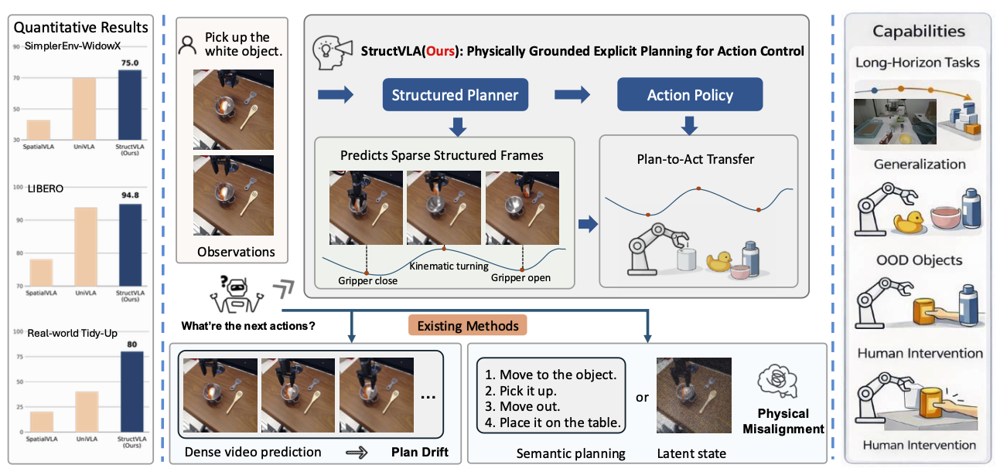
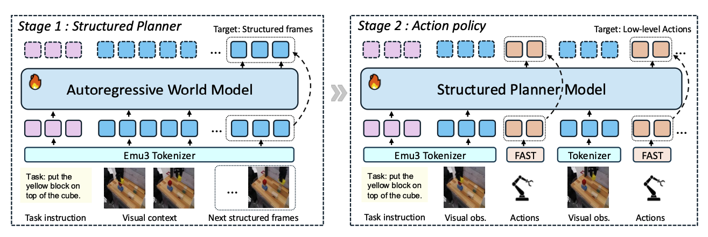
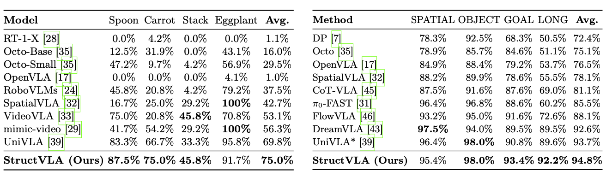
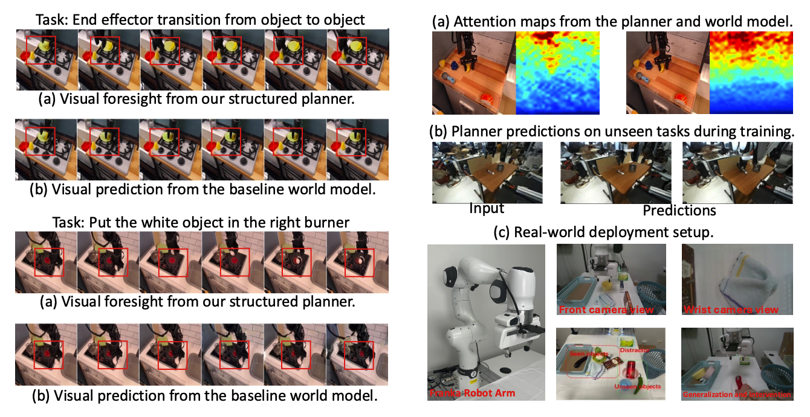
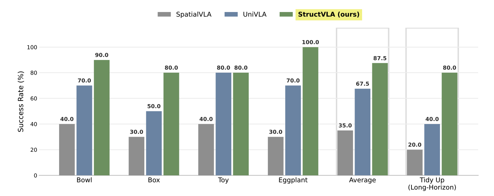
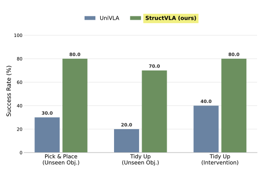

Beyond Dense Futures: World Models as Structured Planners for Robotic Manipulation

Abstract
Recent world-model-based Vision-Language-Action (VLA) architectures have improved robotic manipulation through predictive visual foresight. However, dense future prediction introduces visual redundancy and accumulates errors, causing long-horizon plan drift. Meanwhile, recent sparse methods typically represent visual foresight using high-level semantic subtasks or implicit latent states. These representations often lack explicit kinematic grounding, weakening the alignment between planning and low-level execution. To address this, we propose StructVLA, which reformulates a generative world model into an explicit structured planner for reliable control. Instead of dense rollouts or semantic goals, StructVLA predicts sparse, physically meaningful structured frames. Derived from intrinsic kinematic cues (e.g., gripper transitions and kinematic turning points), these frames capture spatiotemporal milestones closely aligned with task progress. We implement this approach through a two-stage training paradigm with a unified discrete token vocabulary: the world model is first trained to predict structured frames and subsequently optimized to map the structured foresight into low-level actions. This approach provides clear physical guidance and bridges visual planning and motion control. In our experiments, StructVLA achieves strong average success rates of 75.0% on SimplerEnv-WidowX and 94.8% on LIBERO. Real-world deployments further demonstrate reliable task completion and robust generalization across both basic pick-and-place and complex long-horizon tasks.
Method
Kinematic structured frames
Structured subgoals are derived from gripper transitions and motion turning points instead of semantic labels or dense rollouts.
Two-stage training
Stage 1 trains an autoregressive world model to predict sparse structured frames. Stage 2 fine-tunes the model for action prediction.
Plan-to-act transfer
A shared discrete token space strengthens the coupling between visual planning and executable manipulation behavior.

Simulation Results
Results on SimplerEnv-WidowX and LIBERO show consistent gains over prior VLA baselines.

Planner Visualization
The planner produces clearer visual foresight and attention over task-relevant objects and transitions than the baseline world model.

Real-World Results
StructVLA improves success rates on real-world pick-and-place, long-horizon tidy-up, unseen objects, and intervention settings.


Video
A real-world demonstration of StructVLA on tidy-up task.
Citation
If you find our work helpful, please cite us:
@article{structvla2026,
title={Beyond Dense Futures: World Models as Structured Planners for Robotic Manipulation},
author={Jin, Minghao and Liao, Mozheng and Han, Mingfei and Li, Zhihui and Chang, Xiaojun},
journal={arXiv preprint arXiv:XXXX.XXXXX},
year={2026}
}